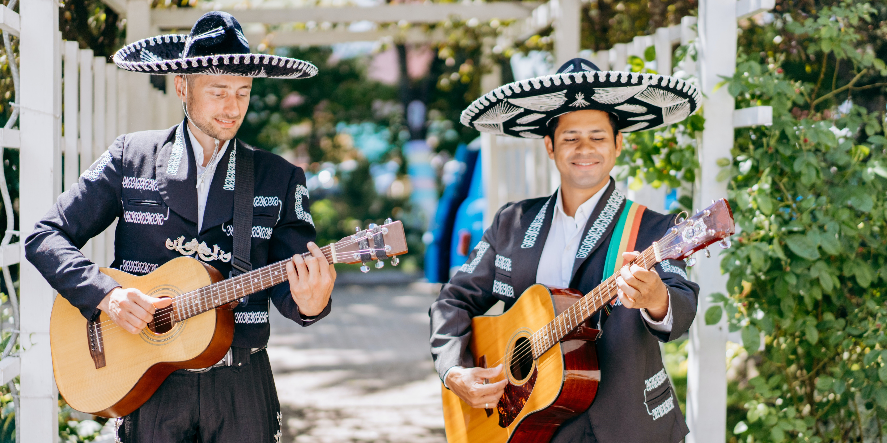
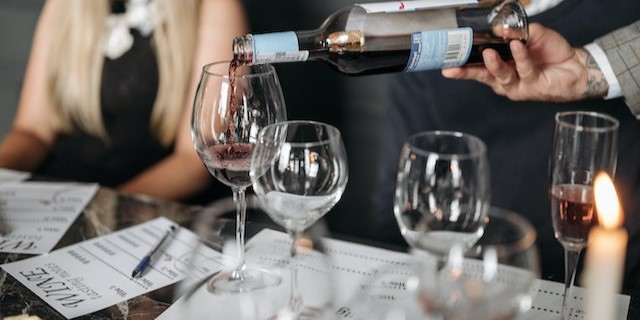

You won't want to miss this...
Upcoming Events
Butterfly Safari
28th July 2023
14:00
Join a butterfly expert for a walk around our wild flower meadows. They'll help you to identify and understand butterfly habitat and behaviour.
Counryside Walk
14th August 2023
10:00
Organised by local walking group 'Monmouth Marchers'. Enjoy the natural beauty of our countryside and a chat in the cafe to finsih!
Halloween
31st October 2023
19:00
Things get spooky here at halloween. We welcome adults and children to play gross party games and disco dance like dracula.
Garden Party
4th August 2023
13:00
Join us in our cafe gardens for afternoon tea and a glass of our sparkling wine. Live music and lawn games add to the fun!
Outdoor Cinema
10th September 2023
19:00
Fire pits for warmth, fresh popcorn, hot chocolate - what could be better while watching a film with your friends under the stars?
Harvest
October - TBC
08:00
Harvest our grapes with us to see what goes into making our wine! We start early and finish early. Lunch and a glass of wine is provided to say thanks for your help.
Weekly Events
Live Band and pizza
Enjoy hearing talented musicians from the local area? Then friday nights are the time to visit. If that isn't enough, our stone pizza oven will be hot and ready to make you a dreamy pizza of your craetion. Thirsty? Our cafe turns into a cosy bar at night to supply you with your beverage of choice.

Taco Tuesdays
Our mexican themed evenings are held every tuesday and are always popular. We have a local mariachi band that plays for us every week while you get the chance to induldge on tacos and nachos. The cafe transforms to a Margharita and Mexican Mule making machine, so you always have a delicious mexican cocktail to wash down the tacos.
Cheese and Wine Evening
Celebrate local wines and those from a little further afield with the perfect accompaniment... cheese! We have a fantastic selection of cheese, some local, which are specially chosen to pair with the evening's wines. A relaxing and intimate evening to share with other wine and cheese enthusiasts.
